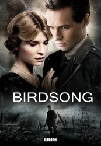

")
Alternativ: Birdsong
Auszeichnungen: 1 BAFTA-Awards gewonnen
 
 IMDB-Wertung: 7.4 / 10
IMDB-Wertung: 7.4 / 10  Metascore:
Metascore: 
Birdsong is a drama series starring Eddie Redmayne and Clemence Poesy as passionate young lovers Stephen and Isabelle, brought together by love and then finding themselves being torn apart by the outbreak of the First World War. The series is an adaptation of Sebastian Faulks's modern classic of the same name.
Jahr: 2012
Dauer: 171 Minuten
FSK: 16
Land: England Studio: Capricci FilmsTonspuren: DTS - ,
Untertitel: Deutsch,
Auflösung: 1080p (1920x1080) Größe: 16896 MB
Genre: Drama, Krieg, Liebe, Geschichte, TV-Serie
Regisseur: Philip Martin
Drehbuch: Albert Serra
Soundtrack:
Darsteller:
 Eddie Redmayne als Stephen Wraysford
Eddie Redmayne als Stephen Wraysford Matthew Goode als Captain Gray
Matthew Goode als Captain Gray Rory Keenan als Private Brennan
Rory Keenan als Private Brennan Thomas Turgoose als Private Tipper
Thomas Turgoose als Private Tipper Richard Madden als Captain Weir
Richard Madden als Captain Weir Joseph Mawle als Jack Firebrace
Joseph Mawle als Jack Firebrace Marie-Josée Croze als Jeanne
Marie-Josée Croze als Jeanne Laurent Lafitte als René Azaire
Laurent Lafitte als René Azaire George MacKay als Private Douglas
George MacKay als Private Douglas Declan Hannigan als Military Medic
Declan Hannigan als Military MedicDatei: X:\2012(A-F)\Birdsong - Gesang vom großen Feuer (2012, FSK16, 1920x1080).mkv seit 22.06.2017
Festplatte: HD 2012(A-M)
 Es gibt insgesamt 102 Filme in der Gruppe '2012(A-F)'
Es gibt insgesamt 102 Filme in der Gruppe '2012(A-F)'